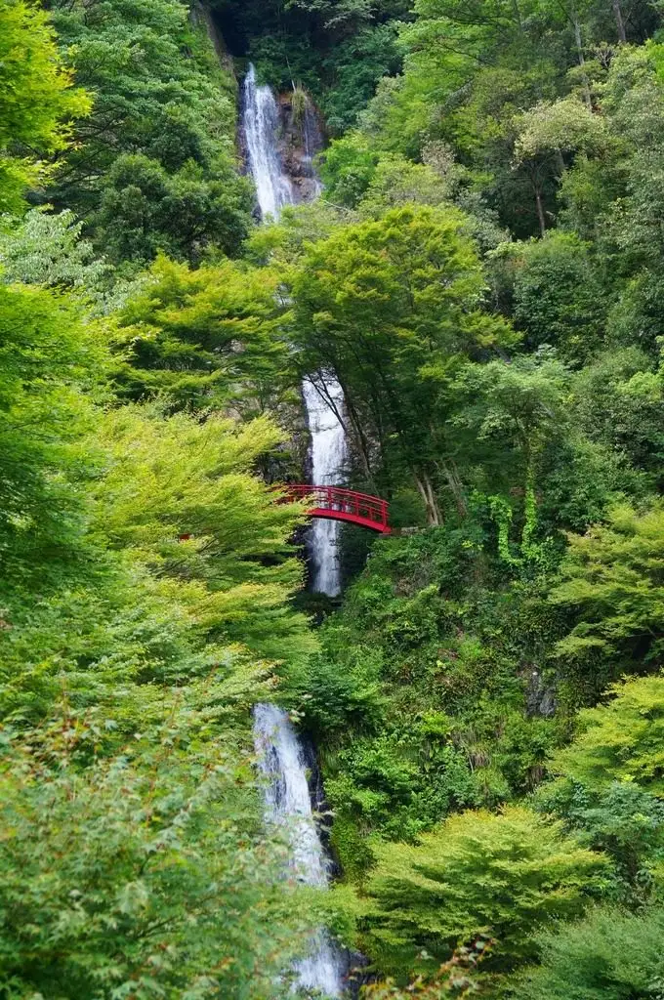
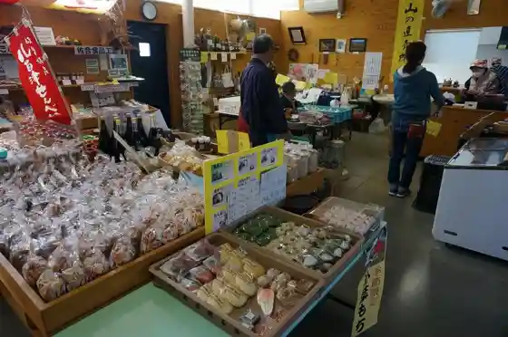

Japan / Gifu / Yaotsu
Yaotsu · Gifu
Yaotsu
Highlighted on the Gifu map.

Yaotsu Town Hall

Sights · Things to do · Places to eat · Places to stay · Day-to-day services
Nearby in Gifu: ← Yamagata · Yoro →
Other towns: Anpachi · Ena · Gero · Gifu · Ginan · Godo · Gujo · Hashima · Hichiso · Hida · Higashishirakawa · Ibigawa · Ikedacho · Kaizu · Kakamigahara · Kani · Kasamatsu · Kawabe · Kitagata · Mino · Minokamo · Mitake · Mizuho · Mizunami · Motosu · Nakatsugawa · Ogaki · Onocho · Sakahogi · Seki · Sekigahara · Shirakawa · Shirakawamura · Tajimi · Takayama · Tarui · Toki · Tomika · Wanouchi · Yamagata · Yoro
All towns in Gifu · Back to all prefectures